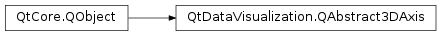

QtDataVisualization.QAbstract3DAxis¶
Inherited by: QtDataVisualization.QValue3DAxis, QtDataVisualization.QCategory3DAxis
Synopsis¶
Functions¶
- def
isAutoAdjustRange() - def
isTitleFixed() - def
isTitleVisible() - def
labelAutoRotation() - def
labels() - def
max() - def
min() - def
orientation() - def
setAutoAdjustRange(autoAdjust) - def
setLabelAutoRotation(angle) - def
setLabels(labels) - def
setMax(max) - def
setMin(min) - def
setRange(min, max) - def
setTitle(title) - def
setTitleFixed(fixed) - def
setTitleVisible(visible) - def
title() - def
type()
Signals¶
- def
autoAdjustRangeChanged(autoAdjust) - def
labelAutoRotationChanged(angle) - def
labelsChanged() - def
maxChanged(value) - def
minChanged(value) - def
orientationChanged(orientation) - def
rangeChanged(min, max) - def
titleChanged(newTitle) - def
titleFixedChanged(fixed) - def
titleVisibilityChanged(visible)
Detailed Description¶
-
PySide2.QtDataVisualization.QtDataVisualization.QAbstract3DAxis.AxisOrientation¶
-
PySide2.QtDataVisualization.QtDataVisualization.QAbstract3DAxis.AxisType¶
-
PySide2.QtDataVisualization.QtDataVisualization.QAbstract3DAxis.autoAdjustRangeChanged(autoAdjust)¶ Parameters: autoAdjust – PySide2.QtCore.bool
-
PySide2.QtDataVisualization.QtDataVisualization.QAbstract3DAxis.isAutoAdjustRange()¶ Return type: PySide2.QtCore.bool
-
PySide2.QtDataVisualization.QtDataVisualization.QAbstract3DAxis.isTitleFixed()¶ Return type: PySide2.QtCore.bool
-
PySide2.QtDataVisualization.QtDataVisualization.QAbstract3DAxis.isTitleVisible()¶ Return type: PySide2.QtCore.bool
-
PySide2.QtDataVisualization.QtDataVisualization.QAbstract3DAxis.labelAutoRotation()¶ Return type: PySide2.QtCore.float
-
PySide2.QtDataVisualization.QtDataVisualization.QAbstract3DAxis.labelAutoRotationChanged(angle)¶ Parameters: angle – PySide2.QtCore.float
-
PySide2.QtDataVisualization.QtDataVisualization.QAbstract3DAxis.labels()¶ Return type: list of strings
-
PySide2.QtDataVisualization.QtDataVisualization.QAbstract3DAxis.labelsChanged()¶
-
PySide2.QtDataVisualization.QtDataVisualization.QAbstract3DAxis.max()¶ Return type: PySide2.QtCore.float
-
PySide2.QtDataVisualization.QtDataVisualization.QAbstract3DAxis.maxChanged(value)¶ Parameters: value – PySide2.QtCore.float
-
PySide2.QtDataVisualization.QtDataVisualization.QAbstract3DAxis.min()¶ Return type: PySide2.QtCore.float
-
PySide2.QtDataVisualization.QtDataVisualization.QAbstract3DAxis.minChanged(value)¶ Parameters: value – PySide2.QtCore.float
-
PySide2.QtDataVisualization.QtDataVisualization.QAbstract3DAxis.orientation()¶ Return type: PySide2.QtDataVisualization.QtDataVisualization::QAbstract3DAxis.AxisOrientation
-
PySide2.QtDataVisualization.QtDataVisualization.QAbstract3DAxis.orientationChanged(orientation)¶ Parameters: orientation – PySide2.QtDataVisualization.QtDataVisualization::QAbstract3DAxis.AxisOrientation
-
PySide2.QtDataVisualization.QtDataVisualization.QAbstract3DAxis.rangeChanged(min, max)¶ Parameters: - min –
PySide2.QtCore.float - max –
PySide2.QtCore.float
- min –
-
PySide2.QtDataVisualization.QtDataVisualization.QAbstract3DAxis.setAutoAdjustRange(autoAdjust)¶ Parameters: autoAdjust – PySide2.QtCore.bool
-
PySide2.QtDataVisualization.QtDataVisualization.QAbstract3DAxis.setLabelAutoRotation(angle)¶ Parameters: angle – PySide2.QtCore.float
-
PySide2.QtDataVisualization.QtDataVisualization.QAbstract3DAxis.setLabels(labels)¶ Parameters: labels – list of strings
-
PySide2.QtDataVisualization.QtDataVisualization.QAbstract3DAxis.setMax(max)¶ Parameters: max – PySide2.QtCore.float
-
PySide2.QtDataVisualization.QtDataVisualization.QAbstract3DAxis.setMin(min)¶ Parameters: min – PySide2.QtCore.float
-
PySide2.QtDataVisualization.QtDataVisualization.QAbstract3DAxis.setRange(min, max)¶ Parameters: - min –
PySide2.QtCore.float - max –
PySide2.QtCore.float
- min –
-
PySide2.QtDataVisualization.QtDataVisualization.QAbstract3DAxis.setTitle(title)¶ Parameters: title – unicode
-
PySide2.QtDataVisualization.QtDataVisualization.QAbstract3DAxis.setTitleFixed(fixed)¶ Parameters: fixed – PySide2.QtCore.bool
-
PySide2.QtDataVisualization.QtDataVisualization.QAbstract3DAxis.setTitleVisible(visible)¶ Parameters: visible – PySide2.QtCore.bool
-
PySide2.QtDataVisualization.QtDataVisualization.QAbstract3DAxis.title()¶ Return type: unicode
-
PySide2.QtDataVisualization.QtDataVisualization.QAbstract3DAxis.titleChanged(newTitle)¶ Parameters: newTitle – unicode
-
PySide2.QtDataVisualization.QtDataVisualization.QAbstract3DAxis.titleFixedChanged(fixed)¶ Parameters: fixed – PySide2.QtCore.bool
-
PySide2.QtDataVisualization.QtDataVisualization.QAbstract3DAxis.titleVisibilityChanged(visible)¶ Parameters: visible – PySide2.QtCore.bool
-
PySide2.QtDataVisualization.QtDataVisualization.QAbstract3DAxis.type()¶ Return type: PySide2.QtDataVisualization.QtDataVisualization::QAbstract3DAxis.AxisType
© 2018 The Qt Company Ltd. Documentation contributions included herein are the copyrights of their respective owners. The documentation provided herein is licensed under the terms of the GNU Free Documentation License version 1.3 as published by the Free Software Foundation. Qt and respective logos are trademarks of The Qt Company Ltd. in Finland and/or other countries worldwide. All other trademarks are property of their respective owners.